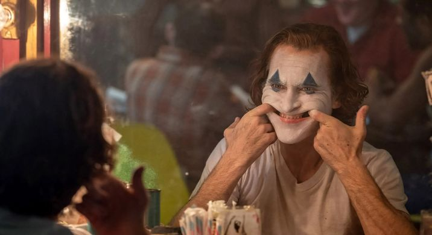
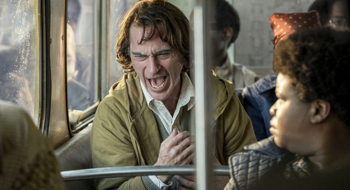
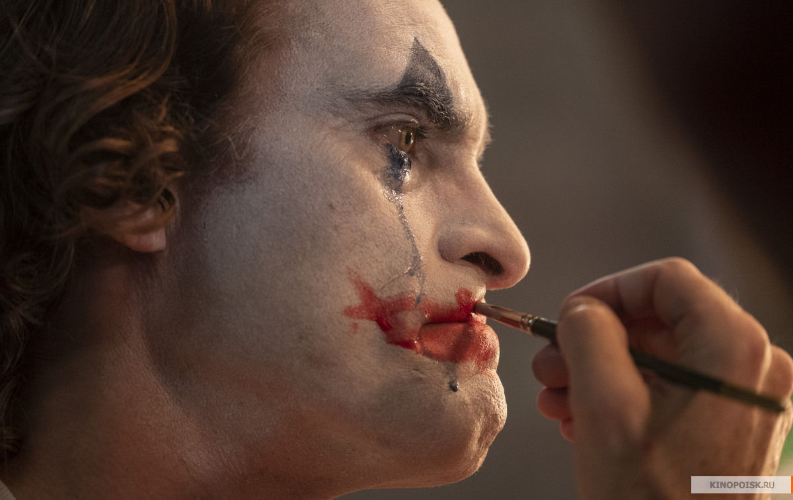
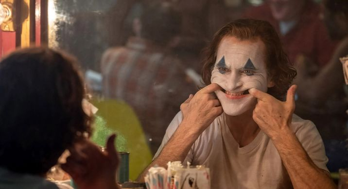
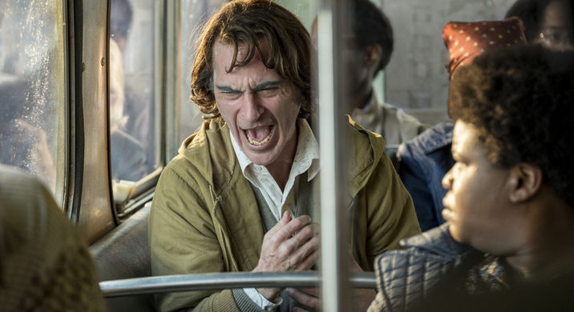
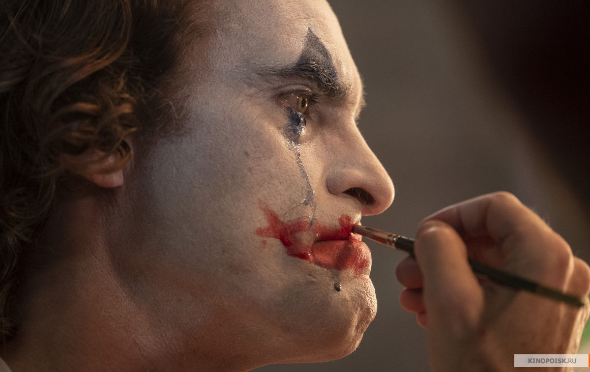
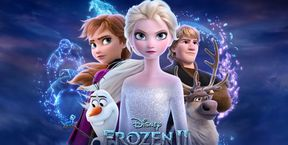

Joker 2D (RU)
| ORAR | • Patria-Multiplex |
 





Studiul unui personaj disprețuit de societate care devine nu doar un sumbru caz social; ci și o poveste moralizatoare. Robert de Niro apare în rolul unei gazde de talk-show care îl face pe Joker să își piardă mințile. În King of Comedy, personajul lui De Niro, comediant ratat, răpea pe un moderator de succes, dar de data aceasta rolurile se vor inversa: De Niro va fi moderatorul plin de el.
| IMDB: | 8,8 ★ |
|
| Țară: Anul: Genul: Regizor: Distribuție: Premieră mondială: Tip: |
SUA | Canada 2019 Crimă | Dramă | Thriller Todd Phillips Robert De Niro, Joaquin Phoenix, Marc Maron, Zazie Beetz 31.08.2009 2D |
Orar
| ASTĂZI | MÂINE | WEEKEND | ALEGE DATA |
| Patria-Multiplex: | 16:40 | 21:40 |
| Patria-Loteanu: | 11:00 | |
Evenimente asemănătoare
|  | ||
Regatul de gheata IIPatria Multiplex |
La cutitePatria Multiplex |
AvanpostulPatria Multiplex |
CE SE ÎNTÂMPLĂ
Cele mai bune filme de dramă
lansate în anul 2019
Încă un film a fost descalificat la
Oscar 2020
Jennifer Lopez a făcut o schimbare
de look. Vezi cum arată interpreta